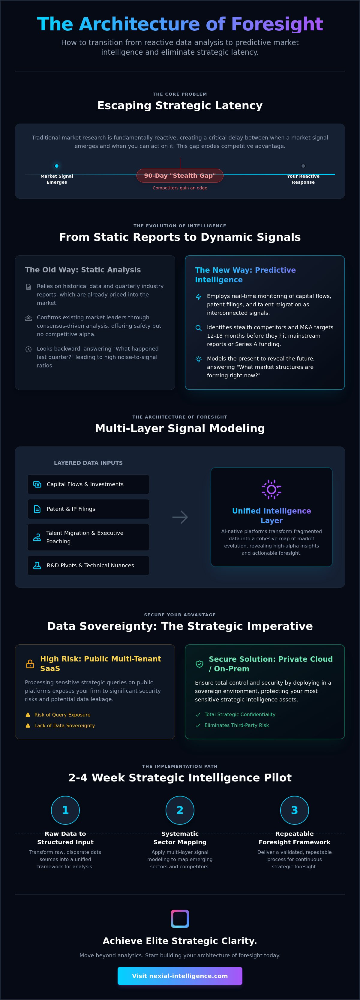

What if the most critical market shifts are already visible, hidden in plain sight within data your competitors are simply ignoring? In an era where information moves at the speed of light, relying on traditional industry reports is a recipe for strategic latency. To maintain an edge, you must master predictive market intelligence by transitioning from reactive data collection to sophisticated signal modeling.
Key Takeaways
- Identify and exploit information asymmetry by moving beyond reactive data to anticipate structural market shifts.
- Deploy Multi-Layer Signal Modeling to detect non-obvious data clusters before they reach peak noise.
- Capture the "Stealth Gap" to monitor potential M&A targets during the critical 90-day window.
- Protect sensitive strategic queries by utilizing Private Cloud or On-Premises environments.
- Validate strategic foresight through a 2-4 Week Strategic Intelligence Pilot.
Beyond Marketing: Defining Predictive Market Intelligence for Strategy
Market intelligence has been largely co-opted by marketing departments for lead scoring and churn prediction. While useful for sales, this narrow focus ignores the highest-stakes use case: corporate development and high-level strategy. True predictive market intelligence targets the total elimination of information asymmetry. When every competitor buys the same industry report, the data within it is already priced into the market.
The Evolution of Market Intelligence
Static sector reports are artifacts of a slower era. Modern strategy requires dynamic signal monitoring. We've moved from asking "What happened last quarter?" to "What is forming right now?"
- Static: Quarterly updates based on historical revenue.
- Dynamic: Real-time monitoring of R&D pivots and talent migration.
- Stealth: Identification of startups 12-18 months before Series A.
The Architecture of Foresight: Multi-Layer Signal Modeling
Strategic foresight isn't a monolith. It's a composite of high-fidelity data points. This methodology moves beyond simple linear projections. It aggregates fragmented data into a cohesive map of market evolution. By layering structural shifts over granular competitive dynamics, organizations can visualize the trajectory of an entire ecosystem before the market reaches consensus.
Layer 1: Structural Market Shifts
Regulatory environments often serve as the primary catalyst for market reorientation. Monitoring these shifts alongside patent filings provides a lead indicator of where capital will flow next.
Layer 2: Competitive Dynamics and Talent Migration
The most reliable predictor of a competitor's next move isn't their press release; it's their payroll. Executive movement and technical talent migration are high-fidelity signals of a strategic pivot.
The Stealth Gap: Identifying M&A Targets Before the Market Reacts
Success in corporate development is determined by the speed of discovery. The most lucrative opportunities exist within the "Stealth Gap," a critical 90-day window before an acquisition target becomes public knowledge. Traditional research tools fail to capture these moments because they rely on lagging financial indicators.

Implementing a Predictive Framework: From Mapping to Monitoring
Execution is where strategic foresight becomes a competitive weapon. This process follows five distinct stages of refinement: Step 1: Define sector boundaries. Step 2: Deploy Multi-Layer Signal Modeling. Step 3: Establish a monitoring baseline. Step 4: Integrate into the decision pipeline. Step 5: Validate via Pilot.
Securing the Intelligence Layer: Private Cloud and Pilot Validation
Public multi-tenant SaaS is a fundamental risk to strategic integrity. When you process sensitive queries on shared infrastructure, you risk leaking intent to the models your competitors use. Nexial prioritizes Private Cloud and On-Premises Deployment to ensure that your most critical strategic queries never leave your controlled environment.